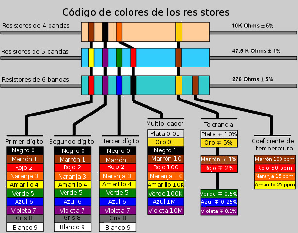

Practicaremos el uso del multímetro, en esta ocasión mediremos directamente los valores de algunas resistencias para, posteriormente compararlos con los valores indicados por el código de color. ¿Qué sucederá con la resistencia si los valores medidos de dos formas diferentes difieren?

Ilustración del código de colores para un resistor.